Apilador de cajas
En este tutorial nos vamos a dedicar a explicar uno de los ejemplos que posee pilas, el apilador de cajas. El mismo trata de un fantasma que se desplaza horizontalmente en el espacio en conjunto a una caja media transparente, y que al dar click izquierdo en el mouse, se soltará una caja. El objetivo es tratar de sumar el mayor puntaje posible, apilando la mayor cantidad de cajas posibles sobre una plataforma. Si una caja cae fuera de la plataforma, el jugador perderá el juego.
El juego cuenta con dos escenas, una que se activa cuando el jugador comienza el juego, y otra que se activará cuando el jugador pierda.
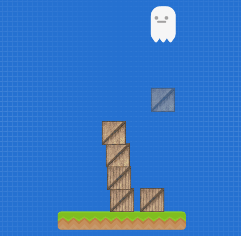
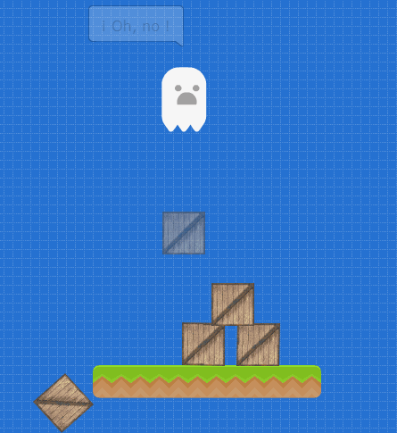
A continuación veremos cómo funciona el juego para que cualquier persona pueda crear su propio apilador. ¡Comencemos!
Escena 1
Como primer paso, abriremos el editor de pilas, y eliminaremos todos los actores, dejando sólo la caja, sobre la cual apilaremos las otras, y la plataforma con las siguientes posiciones en ‘x’ y en ‘y’:
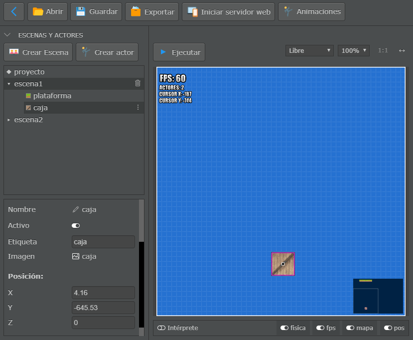
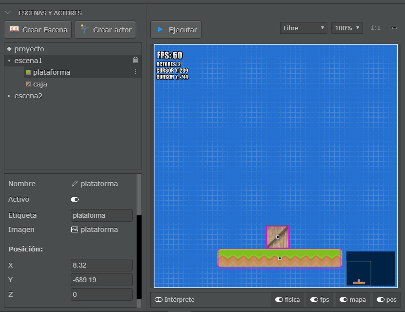
Luego, añadiremos en la primer escena cuatro nuevos actores: un fantasma, una caja invisible, el puntaje y la zona a partir de la cual perderemos.
Para crear el fantasma, seleccionaremos la opción “Crear actor”, y en la ventana emergente elegiremos la opción “actor”.
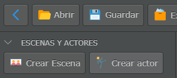
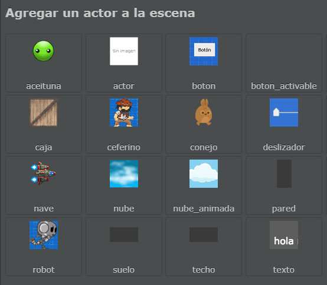
Cambiaremos algunas propiedades del actor recién creado de la siguiente forma:
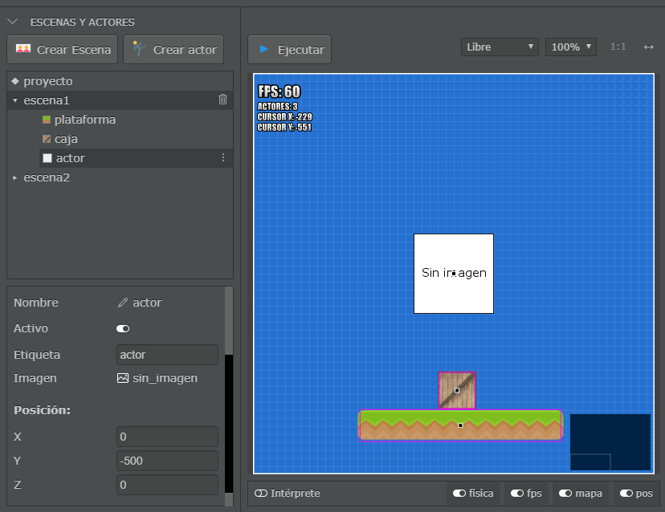
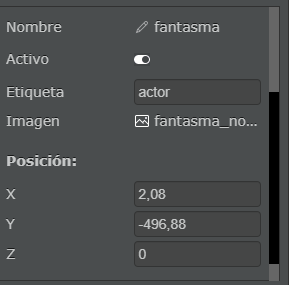
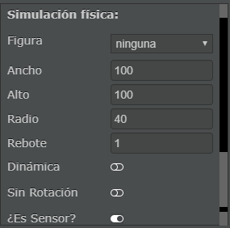
Desactivaremos la opción dinámica, para que nuestro personaje no sea afectado por la “gravedad” del juego, y activaremos la opción “¿Es Sensor?” para que si el fantasma llegara a colisionar contra algún elemento, lo traspase y no rebote.
Para obtener la imagen predefinida del fantasma, haremos click en el campo “Imagen” dentro de las propiedades, y elegiremos la imagen “fantasma_normal”.
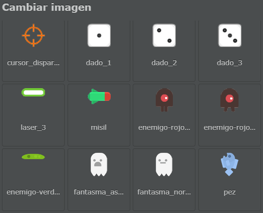
Dentro del editor de código del fantasma definiremos la variable ‘velocidad’, que indicará la
velocidad a la cual se desplazará el actor (en este caso es 3), y la función patrullar(), con la
cual lograremos el desplazamiento izquierda-derecha y derecha-izquierda en bucle mientras dure el
juego.
A dicha función la llamaremos dentro de actualizar() y funciona de la siguiente manera: la
posición del fantasma se incrementa en el valor asignado a la variable velocidad dando la sensación
de movimiento. Si la velocidad es positiva, entonces se moverá hacia la derecha. Cuando la posición
del fantasma llegue al valor del extremo derecho determinado 180, entonces la velocidad se
multiplicará por -1, y de esta forma haremos que el personaje se mueva en sentido contrario hacia
la izquierda y utilizaremos desactivaremos la opción espejado para que el fantasma mire hacia la
izquierda. Una vez que el personaje llegue al extremo izquierdo establecido -180, entonces a
velocidad se multiplica nuevamente por -1, y la propiedad espejado se activará (asignando = true), logrando que el personaje se mueva y mire hacia la derecha. Este proceso se repetirá desde
que comienza el juego hasta que el jugador pierda.
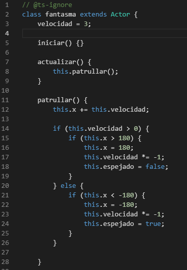
Por ahora hemos terminado con el fantasma, es momento de agregar las cajas que apilaremos. Para ello, seleccionaremos nuevamente la opción “Crear actor” en la sección “ESCENAS Y ACTORES” del editor, y en la ventana emergente elegiremos la opción “Caja”.
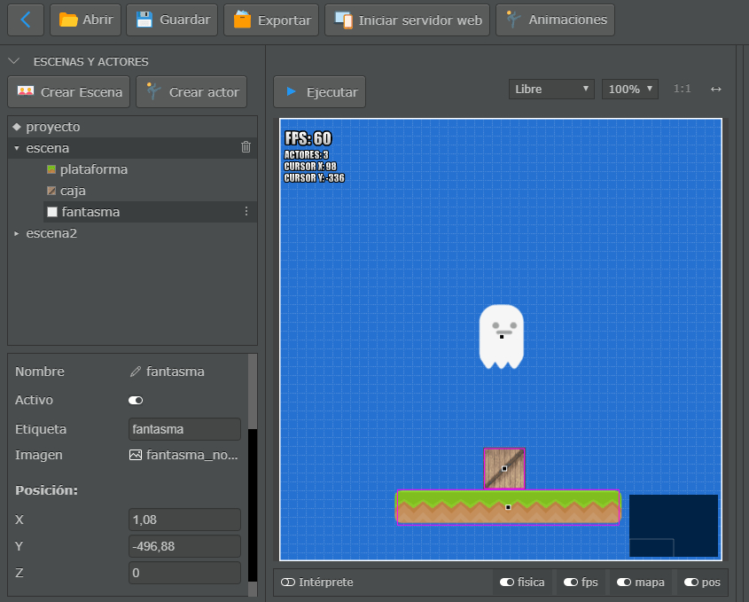
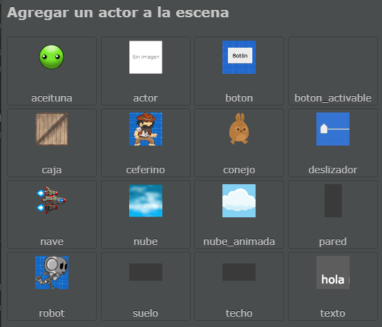
Modificaremos las propiedades de la caja, como la posición, definiendo su nombre como
“caja_invisible” y agregando una transparencia de 45 para dar el efecto de que todavía no ha
sido materializada la caja. Además, desactivaremos la opción “Dinámica” para evitar que caiga la
caja antes de tiempo, activaremos la opción “¿Es Sensor?” para que al colisionar con las cajas ya
apiladas las traspase, y le agregaremos una figura de rectángulo para determinar cuándo colisiona
con la zona que nos hará perder. La caja totalmente definida quedará de la siguiente forma:
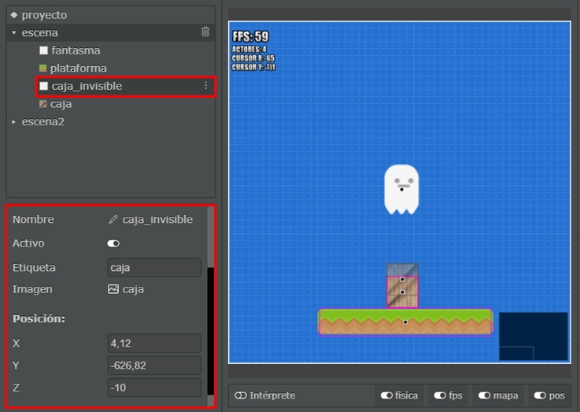
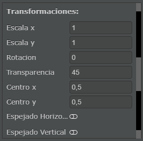
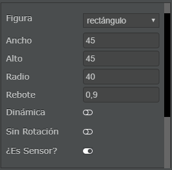
Una vez finalizada la creación de la caja invisible, deberemos asegurarnos de que siga la misma
trayectoria del fantasma, para ello, seleccionaremos al actor fantasma, y dentro de su código
definiremos la función hacer_que_la_caja_siga_al_fantasma(), la cual, como su nombre lo indica,
hará que la caja siga el movimiento del fantasma. A dicha función la llamaremos en actualizar().
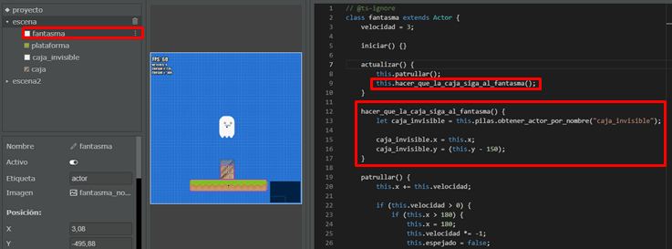
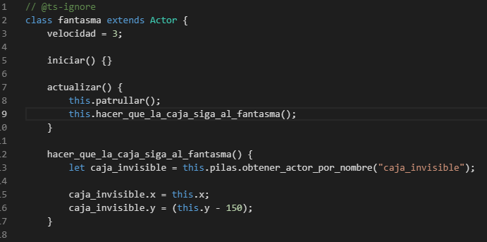
En adición a lo anterior, añadiremos la funcionalidad que nos permita materializar la caja
invisible para apilarla cada vez que hagamos click. A la función que realizará dicha tarea la
denominaremos cuando_hace_click_en_la_pantalla(). Lo que hace este método es clonar cajas en la
posición del fantasma, y aumentar la altura del mismo en 50 de forma que si la torre es muy alta,
no sobrepase al fantasma ni a la caja invisible.
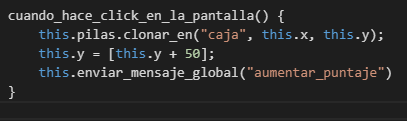
Por el momento, la altura del fantasma y de la caja invisible aumenta, sin embargo, la cámara sigue estática, por lo que una vez que el fantasma supere la altura de la pantalla, se perderá su visión. Para solucionar este problema, deberemos seleccionar la primer escena y añadir la siguiente función en su código:
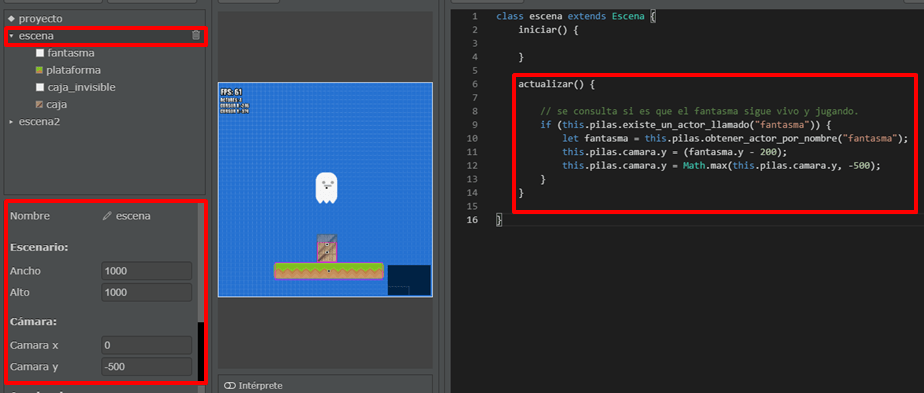
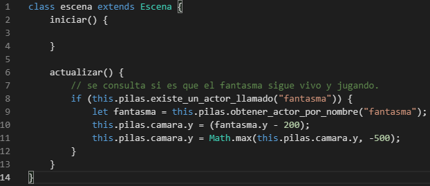
Terminado el paso anterior, agregaremos la zona que nos hará perder, y para ello, volveremos a crear un nuevo actor como hicimos en los pasos anteriores, con la opción “Crear actor”, y en la ventana emergente seleccionaremos la opción “Actor”. Acto seguido, elegiremos una imagen para el nuevo actor. Buscaremos la opción “invisible” y la seleccionaremos.
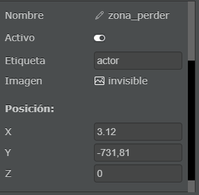
Cambiaremos algunos atributos de este actor, comenzando por su nombre (“zona_perder”), su posición (definida en la imagen anterior), y siguiendo por agregarle una figura rectangular, y habilitando la opción de “¿Es Sensor?” para que las cajas que colisionan con ella la traspasen. Dichas propiedades resultaron así:
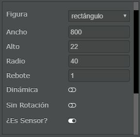
En cuanto a su código, utilizaremos una de las recetas predefinidas de pilas, para ello daremos click en el icono de recetas en la sección “EDITOR DE CÓDIGO”, y en la ventana que emerge seleccionaremos la opción “cuando colisiona eliminar al otro actor”.
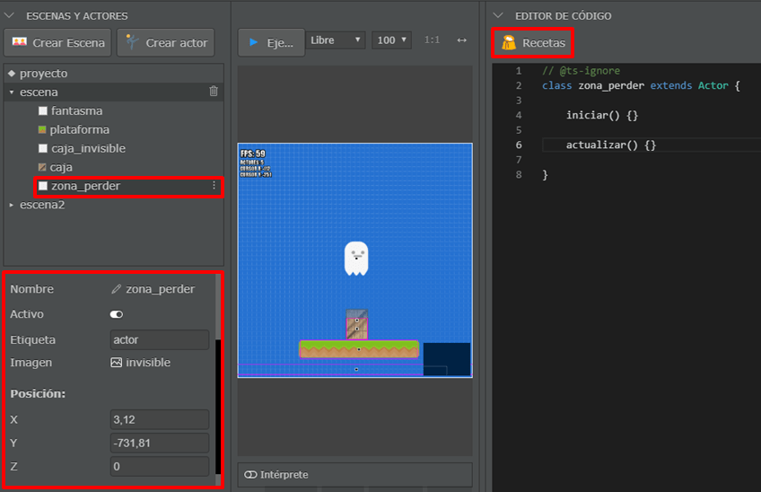
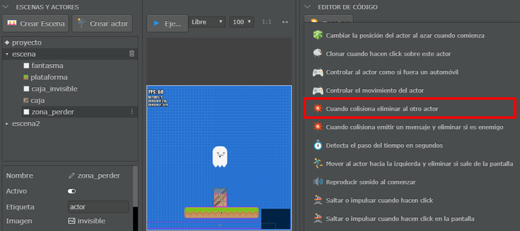
La única diferencia con el método original, es que quitaremos el parámetro que viene dentro del paréntesis del nombre de la función, y agregaremos la función que nos mande el mensaje perder cuando una caja colisione con “zona_perder”.
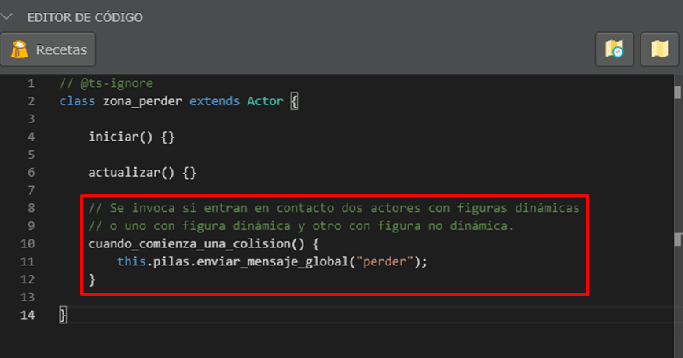
Como último actor de esta escena, crearemos al actor puntaje utilizando la misma metodología de
creación que los actores anteriores. En este caso, en la pantalla emergente elegiremos la opción
“puntaje”. A este actor solo le modificaremos la posición, y agregaremos en su código la función
cuando_llega_el_mensaje_aumentar_puntaje(), el cual aumenta en 1 el puntaje, y definimos la
altura a 220, para que el puntaje aparezca en una altura del juego medianamente aceptable.

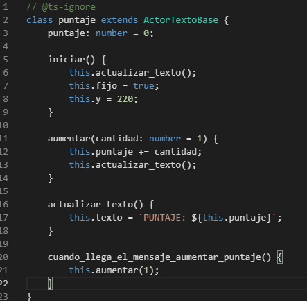
Finalizada la carga de actores de esta escena, debería de quedar así:
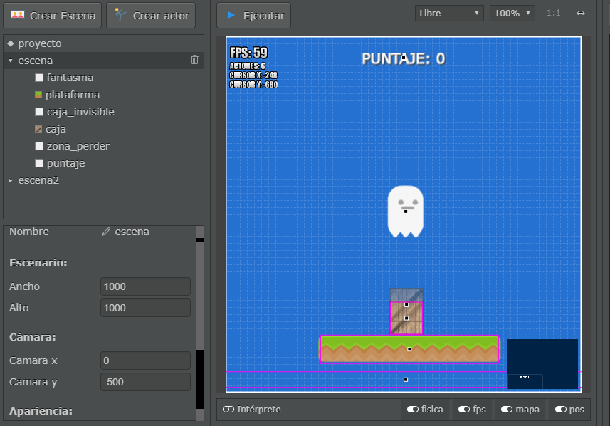
Escena 2
Para empezar con la segunda escena, le cambiaremos a esta el nombre a “actores_pierde”.
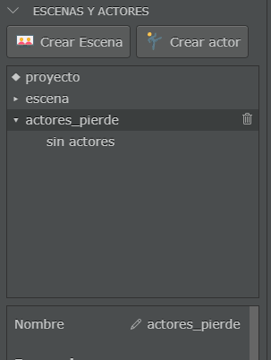
En esta escena, agregaremos dos actores nuevos, por un lado el botón para reiniciar, y por el otro, un fantasma que aparezca cuando el jugador pierda.
Comenzando con el fantasma, realizaremos los mismos pasos que hicimos para crear el primer fantasma, pero esta vez, seleccionaremos la imagen “fantasma_asustado”. Renombraremos al fantasma como “fantasma_pierde”, modificaremos su posición, y desactivaremos la opción “Activo” de modo que el actor aparezca oculto al comienzo de juego.
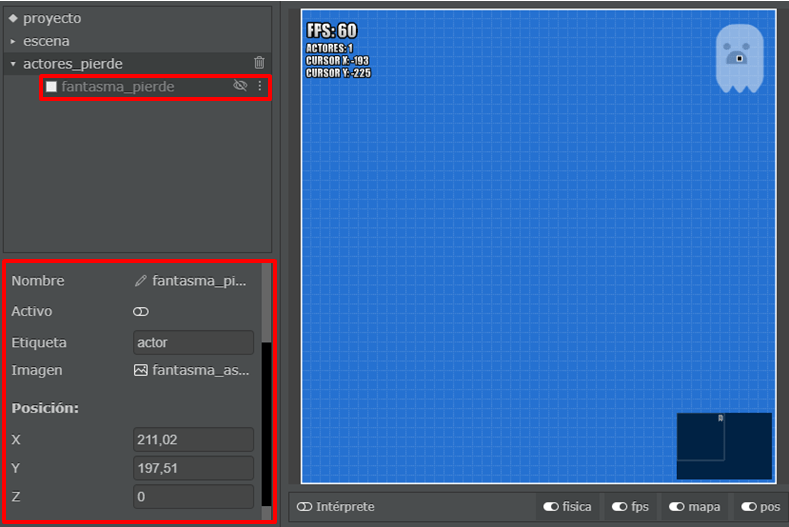
Como segundo paso, crearemos el botón de reinicio que aparecerá cuando el jugador pierda, dándole la oportunidad de repetir el juego. En este caso, seleccionaremos el actor predefinido “reiniciar_escena”, y solo modificaremos su posición, el texto por “Volver a jugar” y la visibilidad del mismo deshabilitando la opción “Activo”, así como también, agregaremos la función inicio() en su código para que el cuadro aparezca en la posición en la que se encuentra la cámara cuando el jugador pierde, resultando:
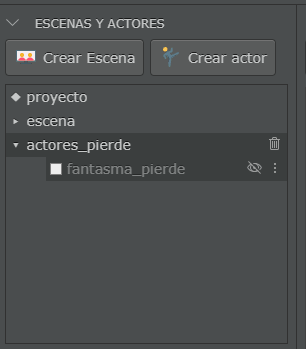
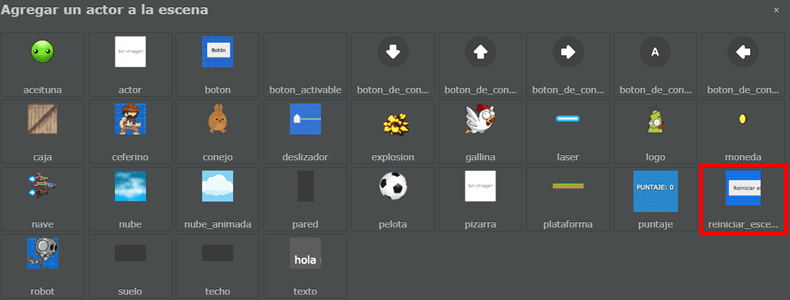
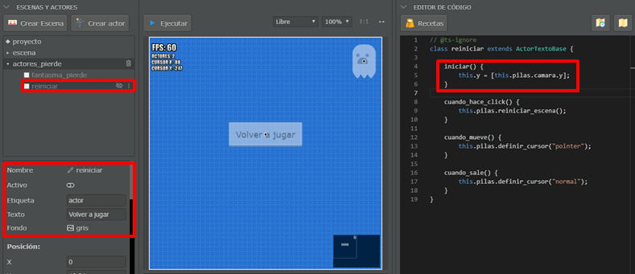
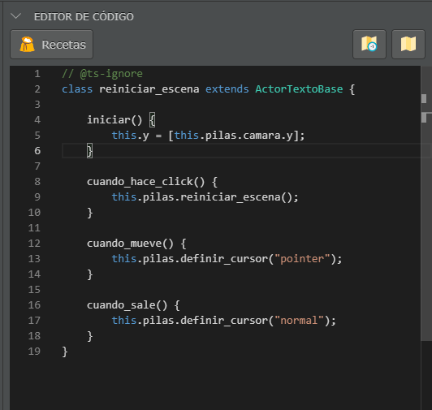
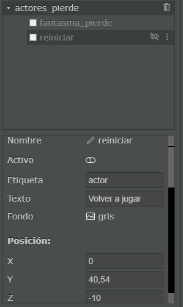
El resultado final de la escena “actores_pierde” será:
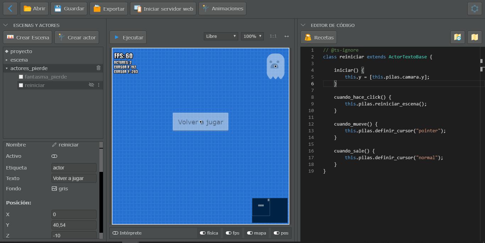
Integrar las dos escenas
Para finalizar, vincularemos la escena “actores_pierde” y la escena principal. ¿Cómo hacemos eso?,
simple, solamente agregaremos una función que llamaremos cuando_llega_el_mensaje_perder() en el
código del actor “fantasma” de la primer escena. Esta función crea un clon del “fantasma_pierde”
en la posición del actor “fantasma”, muestra el mensaje ‘¡Oh, no!’ en pantalla, y elimina al
fantasma original. Finalmente clona el botón reiniciar para que el jugador pueda comenzar el juego
nuevamente.
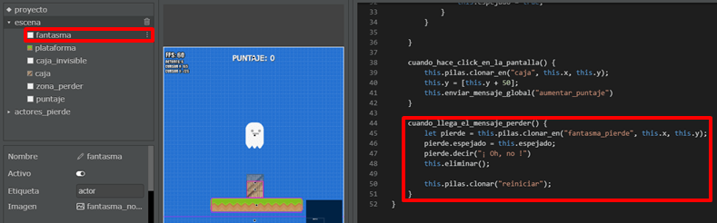
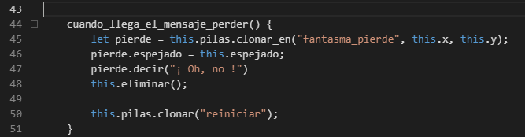

¡Y listo!, ya tenemos listo nuestro juego.
¡Hasta la próxima!